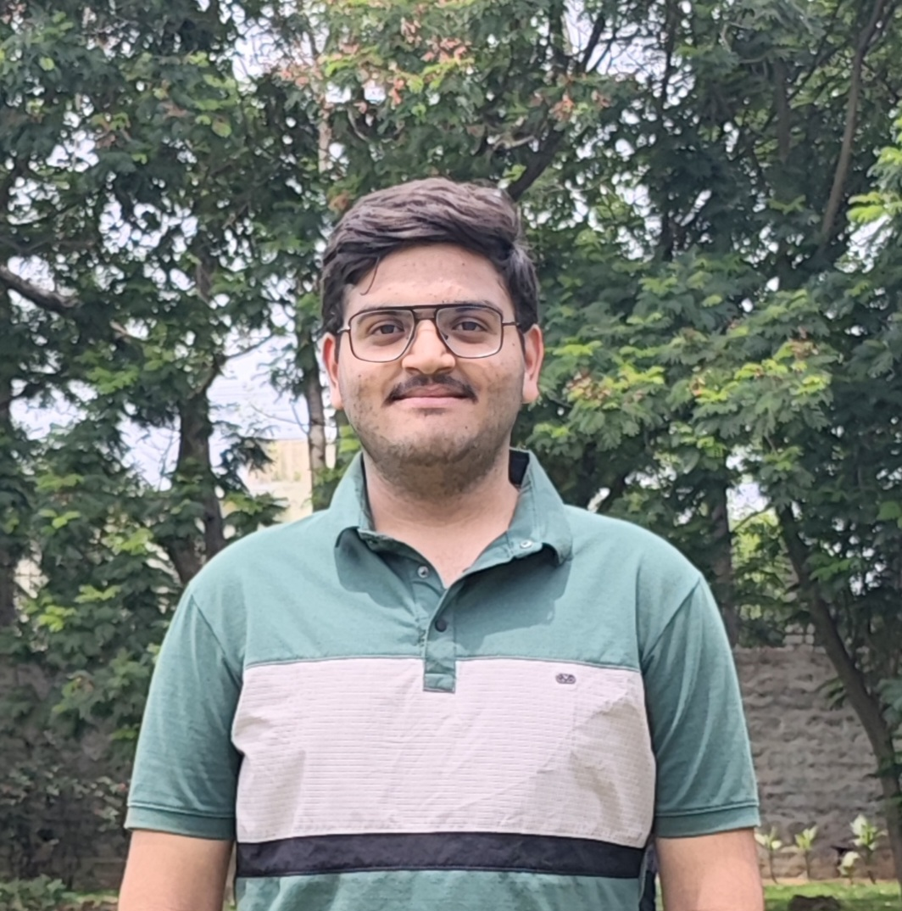
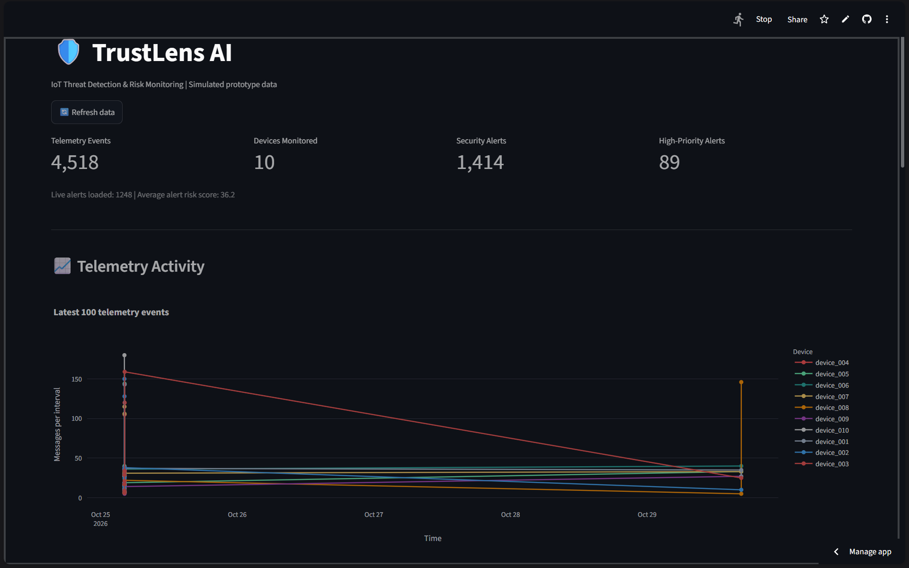
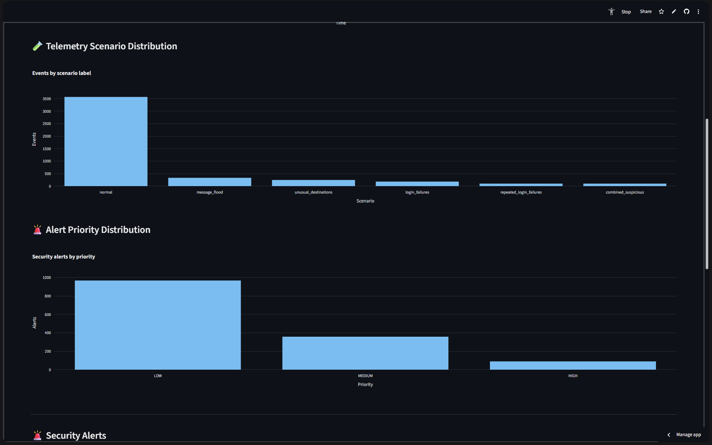
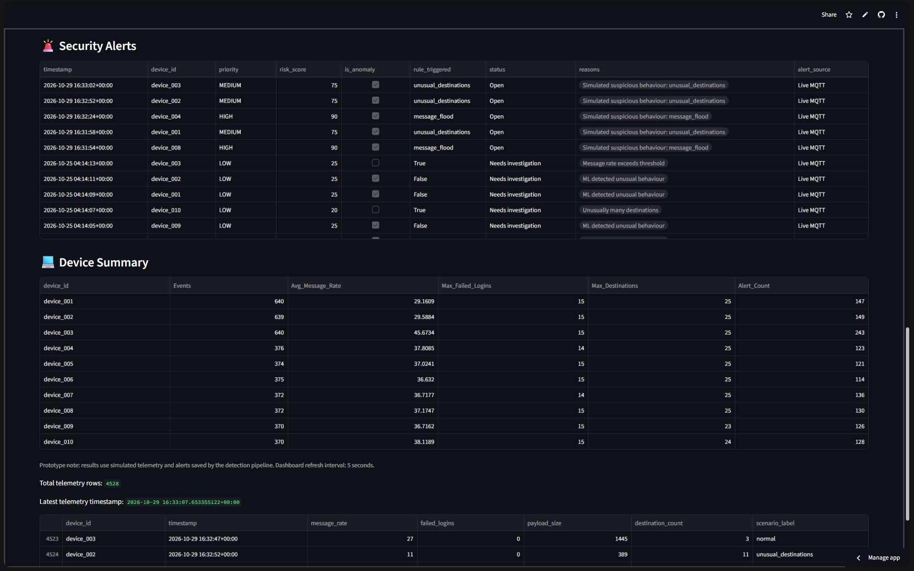
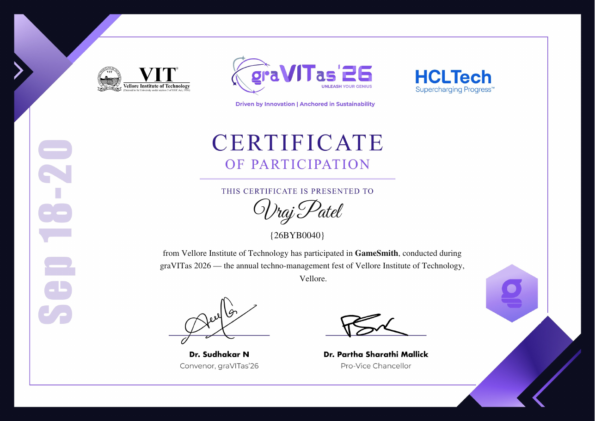
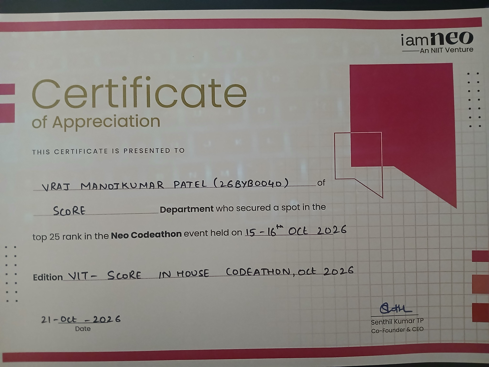

Python
Building programming fundamentals with Python, including the use of variables, control flow, functions, and structured problem-solving. I’m applying this foundation in small applications and the TrustLens AI prototype.
First-year B.Tech student in Computer Science and Engineering (Cyber Security) at VIT Vellore. I enjoy exploring technology, building useful applications, and learning how to make digital systems safer.

A little about me and my direction
I’m Vraj Manojkumar Patel, a first-year B.Tech student pursuing Computer Science and Engineering with a specialization in Cyber Security at VIT Vellore. I’m developing my programming foundation in Python and C while exploring software development, data analysis, and cybersecurity.
I chose CSE because I’m curious about technology, new applications, and the systems that make them work. My long-term goal is to become a skilled ethical (white-hat) hacker with strong coding ability—someone who can understand how systems fail, identify security weaknesses responsibly, and help build more secure software.
This portfolio presents my project work, learning experiences, selected coursework, and writing samples. It reflects my current stage as a student and the practical skills I’m continuing to build.
Cloud Nexus 2026 · 24-hour hackathon
TrustLens AI is a software-based IoT threat-monitoring prototype. It uses simulated device telemetry to demonstrate how unusual device behaviour can be surfaced for investigation through security rules, risk scoring, and a machine-learning anomaly detector.
The project produced a working demonstration dashboard with simulated telemetry, alert tables, and device-level summaries. The displayed counts are from a captured dashboard session and may change as the app updates. Because the prototype uses synthetic data, these results demonstrate the workflow—not validated detection of real-world attacks.



Selected first-year coursework at VIT · descriptions are an initial draft
Building programming fundamentals with Python, including the use of variables, control flow, functions, and structured problem-solving. I’m applying this foundation in small applications and the TrustLens AI prototype.
An introduction to core ideas in quantum physics and the mathematical reasoning used to describe physical systems. This course broadens my scientific perspective and strengthens analytical thinking.
A foundation course connecting engineering principles with practical problem-solving. It supports a broader understanding of how technical systems are designed and analysed.
Python: Intermediate
C: Beginner to intermediate
Currently developing stronger foundations in software construction and cybersecurity.
Participated in the workshop and earned a certificate.
Participated in the workshop and earned a certificate.
Participated in a 24-hour hackathon and developed the TrustLens AI prototype.
Secured 11th position; the certificate recognises a top-25 rank (October 2026).
Cover descriptions for selected assignments
Book review · Blake Crouch
This review examines Recursion, a science-fiction thriller in which a neuroscientist’s attempt to preserve memories leads to technology that can alter the past. The story follows Barry Sutton and Helena Smith as changing timelines threaten reality.
Why I chose it: The novel combines a fast-paced mystery with emotional themes of grief, love, loss, memory, and the reliability of truth. Reviewing it offers an opportunity to discuss narrative structure and consider the ethical and social consequences of powerful technology.
Author: Blake Crouch
Assignment type: Book review / literary response
Mathematical analysis · Quantitative finance
This section is reserved for my mathematics project on stock prices. I will add the project-specific explanation, mathematical methods, charts, and results after the original assignment is provided, so the portfolio accurately represents the work I completed.
Why it belongs in this portfolio: The project is intended to show how mathematical ideas can be applied to stock-price data. The final cover description will identify the concepts used and explain what the work demonstrates about my subject knowledge.
Assignment type: Mathematics / stock-prices project
Status: Awaiting the original project file for an accurate summary.
Selected evidence includes workshop participation certificates and screenshots of the TrustLens AI dashboard, analytics charts, and security-alert/device-summary view.


TrustLens AI project documentation describes the prototype, setup, and implementation. It demonstrates technical communication alongside the code.
Read the TrustLens AI README ↗One-page professional résumé
Download or open my résumé for a concise overview of my education, technical skills, projects, workshops, and achievements.
Connect professionally
VIT Vellore · B.Tech CSE (Cyber Security)